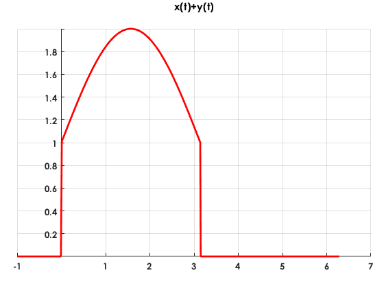

P02: Señales en Tiempo Contínuo

UNIDAD PROFESIONAL INTERDISCIPLINARIA EN INGENIERÍA Y TECNOLOGÍAS AVANZADAS
Análisis de Señales y Sistemas
Autor: García Sandoval Juan Jesús 2MV1
Profesor: Dr Rafael Martínez Martínez
Contents
Objetivos
Como objetivos principales de la práctica se pretende implementar la manipulación básica de MATLAB, así como la graficación de señales reales y complejas continuas, la transformación de señales continuas (escalamientos y traslaciones) y el cálculo de energía y potencia de señales continuas
Introducción
En la presente práctica se desarrollará una página web, en lenguaje html utilizando MATLAB.
MATLAB es un software matemático desarrollado por MathWorks y su nombre proviene de la Abreviación de MATrix LABoratory.
MATLAB surgió a partir que Cleve Moler, co-fundador de MathWorks, matemático estadounidense y programador de ordenador que se especializa en análisis numérico, desarrolló un paquete de informática numérico, para dar su alumnado en la Universidad de Nuevo México, surgiendo en 1984 la primera versión estable del software.
MATLAB implementa un lenguaje de programación propio (lenguaje M) para desarrollar aplicaciones y realizar cálculos de análisis numérico.
MATLAB es un software muy útil para la resolución de problemas matemáticos, sin embargo existen otras alternativas muy similares a MATLAB, por ejemplo Octave que se considera como la versión libre de MATLAB, Maple que es una alternativa muy empleada, y por parte de Wolfram está Mathematica y WolframAlpha esta última es una plataforma en linea que carece de código riguroso por lo que es muy senillo de usar, pero también carece de características como MATLAB o Mathematica.
1
Se creó una función llamada fun1 la cual recibe dos parametros y  para entonces regesar la evaluación como se muestra a continuación:
para entonces regesar la evaluación como se muestra a continuación:
Proponrmos y con los siguientes valores:
a=1; w=2; F(w)=fun1(a,w);
El código de la función fun1 se encuentra en el apéndice 1
2
Se creará una función que nos permita graficar con un estilo predefinido. En este caso se graficará el ejemplo del inciso anterior . La función se invoca de la siguiente manera: Figura(valores en x, valores en y, 'título del gráfico')
w=-2:0.001:2;
a=1;
f=@(w) a./(a^2+w.^2);
Figura(w,f(w),'F(w)')
El código de la función Figura se encuentra en el apéndice 2.
3
Se creará una función que gráfique funciones de con un estilo predefinido. Para este caso se graficará el espectro de magnitud y de fase de la transformada de Fourier de la función .
Tenemos entonces que
pasando a su forma polar:
por lo tanto:

Entonces podemos emplear la función para graficar el espectro de fase y de magnitud, donde
clear all
w=-10:0.01:10;
f=@(w) 1./sqrt(4+w.^2);
g=@(w) (-1).*atan(w./2);
Figura2(w,f(w),g(w))
De igual manera podemos graficar la función original con la función hecha en el punto 2:
clear all t=-10:0.01:10; f=@(t) exp(-2.*t); Figura(t,f(t),'f(t)')
El código de la función Figura y el código de la función Figura2 se encuentra en el apéndice 2 y en el apéndice 3 respectivamente.
4
M1.1 Inline Functions
definimos la función :
clear all
f=@(t) exp(-t).*cos(2*pi*t);
evaluamos la función en cero:
f(0)
ans =
1
también podemos evaluar la función en un vector definido:
t=(-2:2); f(t)
ans =
7.3891 2.7183 1.0000 0.3679 0.1353
Finalmente podemos graficar contra :
close all plot(t,f(t)); xlabel('t'); ylabel('f(t)'); grid;
Lo que nos arroja una gráfica poco entendible, asi que daremos más elementos al vector y graficaremos de nuevo:
t=-2:0.01:2; close all plot (t,f(t)) xlabel('t'); ylabel('f(t)'); grid;
en esta gráfica si podemos analizar la señal con claridad.
M1.2 Relational Operators and the Unit Step Function
Definimos la función
u=@(t) (t>=0&t>=0);
posteriormente construimos un vector con valores enteros y graficamos:
t=(-2:2); close all plot(t,u(t)) xlabel('t'); ylabel('u(t)'); grid;
como podemos ver, la gráfica no se parece en lo absoluto al escalón unitario, por lo que le damos más elementos al vector :
t=(-2:0.01:2); close all plot (t,u(t)); xlabel('t'); ylabel('u(t)'); axis([-2 2 -0.1 1.1])
podemos definir una función similar a una resta de escalones, por ejemplo de la siguiente forma:
p = @(t)(t>=0 & t<1); t = (-1:0.01:2); plot(t,p(t)) xlabel('t'); ylabel('p(t) = u(t)-u(t-1)'); axis ([-1 2 -.1 1.1]);
De esta manera podmos construir escalones unitarios y diferencias entre ellos.
M1.3 Visualizing Operations on the Independent Variable
Construimos la función de la siguiente forma:
g=@(t) exp(-t).*cos(2*pi*t).*(t>=0);
construimos un vector t y graficamos :
t = (-2:0.01:2); plot(t,g(2*t+1)); xlabel('t'); ylabel('g(2t+1)'); grid;
tambien podemos aplicar una inversión horizontal multiplicando el argumento de la función por un menos :
plot(t,g(-t+1)); xlabel('t'); ylabel('g(-t+1)'); grid;
como parte final del inciso, pomos realizar una suma de funciones de la siguiente manera:
plot(t,g(2*t+1) +g(-t+1)); xlabel('t'); ylabel('h(t)'); grid;
M1.4 Numerical Integration and Estimating Signal Energy
Podemos calcular la energía de una señal mediante la ecuación
Para llevar a cabo esto en MATLAB definimos la función y construimos un vector t:
clear all
x=@(t)exp(-t).*((t>=0)&(t<1));
t=(0:0.01:1);
posteriormente utilizamos es comando de sum para calcular la energía:
Ex=sum(x(t).^2*0.01)
Ex =
0.4367
resultado que no es perfecto ya que puede tener al rededor de 1% de error relativo. Sin embargo para tener un resultado mucho más exacto (un error relativo de 0.0026%) podemos definir primero la función al cuadrado, es decir:
x2=@(t) exp(-2*t); Ex = integral(x2,0,1)
Ex =
0.4323
Otro ejemplo más complejo podría ser el siguiente:

g2 =@(t) exp(-2.*t).*(cos(2.*pi.*t).^2).*(t>=0); t = (0:0.01:100); Eg = integral(g2, 0,100)
Eg =
0.2562
5
Para emplear de manera práctica lo visto en el inciso anterior, se resolverá el ejercicio 1.2.2. de B.P. Lathi. Linear Sytems and Signals:
1.2.2. For the signal x(t) illustrated
clear all close all t=-10:0.01:10; x=@(t) abs(t).*(t>=-4&t<=2); Figura(t,x(t),'x(t)') axis([-5 3 -0.1 4.5])
a.
Figura(t,x(t-4),'x(t-4)')
axis([-1 7 -0.1 4.5])
b. 
Figura(t,x(t./1.5),'x(t/1.5)')
axis([-7 4 -0.1 4.5])
c.
Figura(t,x(-t),'x(-t)')
axis([-3 5 -0.1 4.5])
d.
Figura(t,x(2.*t-4),'x(2t-4)')
axis([-1 4 -0.1 4.5])
e.
Figura(t,x(2-t),'x(2-t)')
axis([-1 7 -0.1 4.5])
6
Para este punto se ha elaborado la función energia, la cual recibe una señal y calcula su energía.
A manera de demostración se resolverá el problema 1.1.3. de B.P. Lathi. Linear Sytems and Signals:
Find the energies of the pair of signals x(t) and y(t) depicted. Sketch and find the energies of signals x(t) + y(t) and x(t) - y(t).
a
clear all t=-1:0.01:5; x=@(t) 1*(heaviside(t)-heaviside(t-2)); y=@(t) (heaviside(t)-2.*heaviside(t-1)+heaviside(t-2)); close all Figura3(t,x(t),y(t))
para :
h=@(t) (x(t)+y(t));
Figura(t,h(t),'x(t)+y(t)')
h=@(t) h(t).^2;
E=energia(h)
E =
4.0000
para :
h=@(t) (x(t)-y(t));
Figura(t,h(t),'x(t)-y(t)')
h=@(t) h(t).^2;
E=energia(h)
E =
4.0000
b
clear all t=-1:0.01:2.5*pi; x=@(t) sin(t).*(heaviside(t)-heaviside(t-2*pi)); y=@(t) (heaviside(t)-heaviside(t-2*pi)); close all Figura3(t,x(t),y(t))
para :
h=@(t) (x(t)+y(t));
Figura(t,h(t),'x(t)+y(t)')
h=@(t) h(t).^2;
E=energia(h)
E =
9.4248
para :
h=@(t) (x(t)-y(t));
Figura(t,h(t),'x(t)-y(t)')
h=@(t) h(t).^2;
E=energia(h)
E =
9.4248
c
clear all t=-1:0.01:2*pi; x=@(t) sin(t).*(heaviside(t)-heaviside(t-pi)); y=@(t) (heaviside(t)-heaviside(t-pi)); close all Figura3(t,x(t),y(t))
para :
h=@(t) (x(t)+y(t));
Figura(t,h(t),'x(t)+y(t)')
h=@(t) h(t).^2;
E=energia(h)
E =
8.7124
 para :
h=@(t) (x(t)-y(t));
Figura(t,h(t),'x(t)-y(t)')
h=@(t) h(t).^2;
E=energia(h)
E =
0.7124
El código para la función Figura3 y para la función energia se encuentran en los apéndices 4 y 5 respectivamente
7
Para este punto se ha elaborado la función potencia, la cual recibe una señal y calcula su potencia.
A manera de demostración se resolverá el problema 1.1.4. de B.P. Lathi. Linear Sytems and Signals:
Find the power of the periodic signal Find also the powers and the rms values of:.
clear all t=-10:0.01:10; T=4; x=@(t) (t.^3).*(heaviside(t+2)-heaviside(t-2)); close all Figura(t,x(t),'x(t)')
Aunque la función es periódica, por la complejidad de realizar la gáfica en MATLAB, solo graficaremos un periodo
x=@(t) x(t).^2; potencia(x,T)
P =
9.1429
rms =
3.0237
a
clear all t=-10:0.01:10; T=4; x=@(t) (t.^3).*(heaviside(t+2)-heaviside(t-2)); close all Figura(t,x(-t),'x(-t)') x=@(t) x(-t).^2; potencia(x,T)
P =
9.1429
rms =
3.0237
b
clear all t=-10:0.01:10; T=4; x=@(t) (t.^3).*(heaviside(t+2)-heaviside(t-2)); close all Figura(t,2*x(t),'2x(t)') x=@(t) (2*x(t)).^2; potencia(x,T)
P =
36.5714
rms =
6.0474
El código para la función potencia se encuentra en el apéndice 6.
Apéndice
Apéndice 1
function [ F ] = fun1( a,w ) F=a/(a^2+w^2); end
Apéndice 2
function Figura(X1, Y1, titulo) %CREATEFIGURE(X1, Y1) % X1: vector of x data % Y1: vector of y data
% Auto-generated by MATLAB on 31-Mar-2019 17:32:41
% Create figure
figure1 = figure;
% Create axes axes1 = axes('Parent',figure1,... 'Position',[0.0453879941434846 0.11 0.920937042459737 0.790702356549946]); hold(axes1,'on');
% Create plot plot(X1,Y1,'ZDataSource','','DisplayName','f(x)','LineWidth',2,... 'Color',[1 0 0]);
% Create title title({titulo,''});
% Set the remaining axes properties set(axes1,'Color',[0.960784316062927 0.921568632125854 0.921568632125854],... 'FontName','Century Gothic','FontWeight','bold','XAxisLocation','origin',... 'XGrid','on','YAxisLocation','origin','YGrid','on');
Apéndice 3
function Figura2(P,X1, Y1) %CREATEFIGURE(X1, Y1) % X1: vector of x data % Y1: vector of y data
% Auto-generated by MATLAB on 31-Mar-2019 19:34:23
% Create figure
figure1 = figure;
% Create subplot subplot1 = subplot(2,1,1,'Parent',figure1); hold(subplot1,'on');
% Create plot plot(P,X1,'Parent',subplot1,'LineWidth',2,'Color',[1 0 0]);
% Create title title('espectro de magnitud');
% Set the remaining axes properties set(subplot1,'Color',[1 0.968627452850342 0.921568632125854],'FontName',... 'Century Gothic','FontWeight','bold','XAxisLocation','origin','XGrid','on',... 'YAxisLocation','origin','YGrid','on'); % Create subplot subplot2 = subplot(2,1,2,'Parent',figure1); hold(subplot2,'on');
% Create plot plot(P,Y1,'Parent',subplot2,'LineWidth',2,'Color',[1 0 0]);
% Create title title('espectro de fase');
% Set the remaining axes properties set(subplot2,'Color',[1 0.968627452850342 0.921568632125854],'FontName',... 'Century Gothic','FontWeight','bold','XAxisLocation','origin','XGrid','on',... 'YAxisLocation','origin','YGrid','on');
Apéndice 4
function Figura3(P,X1, Y1) %CREATEFIGURE(X1, Y1) % X1: vector of x data % Y1: vector of y data
% Auto-generated by MATLAB on 31-Mar-2019 19:34:23
% Create figure
figure1 = figure;
% Create subplot subplot1 = subplot(1,2,1,'Parent',figure1); hold(subplot1,'on');
% Create plot plot(P,X1,'Parent',subplot1,'LineWidth',2,'Color',[1 0 0]);
% Create title title('x(t)');
% Set the remaining axes properties set(subplot1,'Color',[1 0.968627452850342 0.921568632125854],'FontName',... 'Century Gothic','FontWeight','bold','XAxisLocation','origin','XGrid','on',... 'YAxisLocation','origin','YGrid','on'); axis([-1 2.5*pi -2 2]) % Create subplot subplot2 = subplot(1,2,2,'Parent',figure1); hold(subplot2,'on');
% Create plot plot(P,Y1,'Parent',subplot2,'LineWidth',2,'Color',[1 0 0]);
% Create title title('y(t)');
% Set the remaining axes properties set(subplot2,'Color',[1 0.968627452850342 0.921568632125854],'FontName',... 'Century Gothic','FontWeight','bold','XAxisLocation','origin','XGrid','on',... 'YAxisLocation','origin','YGrid','on'); axis([-1 2.5*pi -2 2])
Apéndice 5
function [ E ] = energia( X ) E=integral(X,-Inf,Inf); end
Apéndice 6
function [ ] = potencia( X,T ) P=(integral(X,-T/2,T/2))./T rms=sqrt(P) end
Referencias
- B.P. Lathi. (2005). Linear Systems and Signals. New York: Oxford University Press, Inc.
- Integral. 29 marzo 2019, de MathWorks Sitio web: https://es.mathworks.com/discovery/integral.html
- Limit. 29 marzo 2019, de MathWorks Sitio web: https://www.mathworks.com/help/symbolic/limit.html
- (2012). Juntas, pero no revueltas: sub-gráficas en una misma figura de Matlab . 29 marzo 2019, de 5 minutos de Matlab Sitio web: http://5minutosdematlab.blogspot.com/2012/09/juntas-pero-no-revueltas-sub-graficas.html